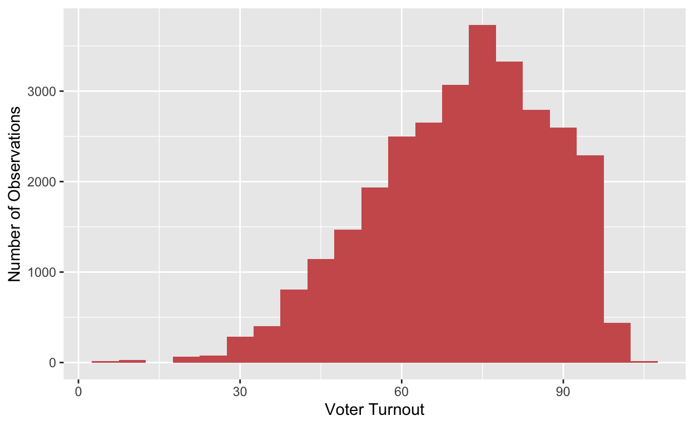
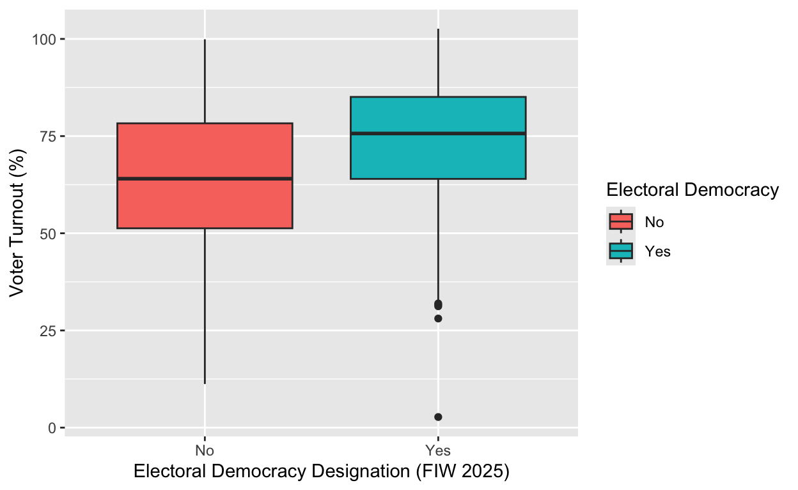
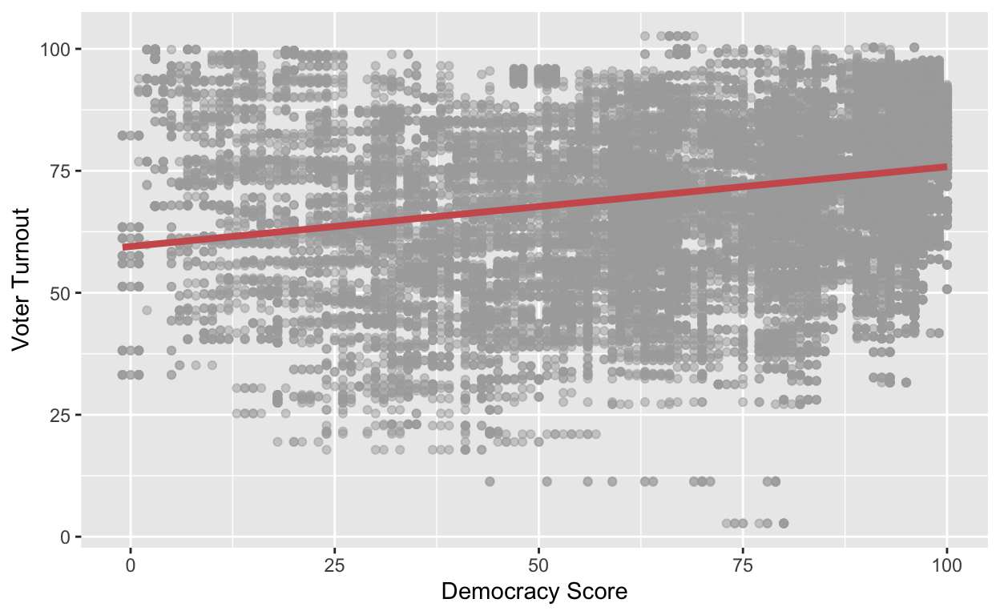

This project aims to evaluate how voter turnout in a country is affected by its level of democracy.
In this project, I will study different countries that are classified as electoral democracies and assess how these countries’ democracy level scores impact their election voter turnout.
My hypothesis is that citizens in countries classified as having a lower level of democracy are going to be less likely to vote than citizens who live in countries that have a higher democracy score. I predict that there will be a positive relationship between my variables. In other words, as the level of democracy increases then voter turnout will also increase.
I predict this to be the relationship since lower levels of democracy are often linked to corruption which could jeopardize the legitimacy of elections. For citizens living in countries that hold elections that are not free and fair, they could perceive that their vote does not matter leading to lower levels of voter turnout. I believe that this topic is interesting because 100% voter turnout is incredibly rare, and I am interested in how there are some people who actively chose not to vote in their nation’s elections, despite the fact that the policies that their elected officials make will impact them.
library(tidyverse)
library(readxl)
library(readr)
library(broom)
Voter_Turnout <- read_xlsx("data/idea_export_voter_turnout_database_world.xlsx")
Electoral_Democracy <- read_xlsx("data/List_of_Electoral_Democracies_FIW24.xlsx", skip = 1)
Freedom_House <- read_xlsx("data/All_data_FIW_2013-2025.xlsx",
sheet = "FIW13-25", skip = 1)voter_turnout_names <- Voter_Turnout |>
select(-ISO2, -ISO3) |>
rename(Country2 = Country) |>
mutate(
Country = case_when(
`Country2`== "South Korea" ~ "Korea, Republic of",
`Country2`=="Côte d'Ivoire" ~ " Cote d'Ivoire",
`Country2`=="Czechia" ~ "Czech Republic",
`Country2`=="Iran, Islamic Republic of" ~ "Iran",
`Country2`=="Korea, Republic of" ~ "South Korea",
`Country2`=="Lao People's Dem. Republic" ~ "North Korea",
`Country2`=="North Macedonia, Republic of" ~ "North Macedonia",
`Country2`=="Republic of The Congo (Brazzaville)" ~ " Congo (Brazzaville)",
`Country2`=="Russian Federation" ~ "Russia",
`Country2`=="São Tomé and Príncipe" ~ "Sao Tome and Principe",
`Country2`=="Syrian Arab Republic" ~ "Syria",
`Country2`=="Tanzania, United Republic of" ~ "Tanzania",
`Country2`=="Viet Nam" ~ "Vietnam",
.default = `Country2`))
Electoral_Democracy_new <- Electoral_Democracy |>
rename(`Electoral Democracy` = `Electoral Democracy Designation in FIW 2025`)
Joined_data_clean <- Electoral_Democracy_new |>
inner_join(voter_turnout_names, by = "Country") |>
select(-Country2) |>
mutate(`Voter Turnout` = as.numeric(str_remove(`Voter Turnout`, "%")))
Freedom_House <- Freedom_House |>
rename(Country = `Country/Territory`)
Joined_data_extra_clean <- Joined_data_clean |>
left_join(Freedom_House |> select(Country, Total), by = "Country") |>
rename(`Democracy Score` = Total)My data set called “Voter Turnout” comes from the International Institute for Democracy and Electoral Assistance (International IDEA). It includes the voter turnout(as a percent) as well as the dates for each election for many countries.
My data set called “Electoral Democracy” comes from Freedom House, and it states which of the 195 countries in the world are classified as electoral democracies in 2025. This data either classifies as an electoral democracy(Yes) or not(No). Freedom House’s “electoral democracy” designation identifies countries meeting minimum standards for political rights and civil liberties. It requires a score of 7+ in the Electoral Process subcategory, a total political rights score of 20+, and a civil liberties score of 30+. This provides insight to which countries hold free and fair elections. Throughout this project electoral democracies will refer to countries that received this designation from Freedom House, while non-electoral democracies will refer to countries that did not meet these standards.
My data set called “Freedom House” also comes from Freedom House. Freedom House is a U.S.-based, nonpartisan non-governmental organization that advocates for democracy, political freedom, and human rights worldwide. It annually assesses the level of political rights and civil liberties in the nations and territories of the world. This data features several different scores that countries received from Freedom House’s “Freedom in the World” report based on items like electoral process, freedom of expression, personal autonomy, and individual rights. This data was used to help me identify from the countries that hold elections which ones lean more democratic. For the point of this project I looked at the total score for each country. This variable is the aggregate score for all categories accessing democratic level.
My independent variable is the total aggregate democratic score level from the “Freedom House” data set. This variable is on a scale from 0 to 100, where 100 represents the highest level of freedom and 0 the lowest.
My dependent variable is the voter turnout in a country from my data set “Voter Turnout”. This variable is measured as a percentage.
Since my hypothesis is that as the level of democracy increases then voter turnout will also increase, a pattern that would support my hypothesis would be lower voter turnout in countries with lower total democratic level scores and higher voter turnout in countries with greater democratic scores.
ggplot(data = Joined_data_extra_clean, aes(x = `Voter Turnout`)) +
geom_histogram(binwidth = 5, fill = "indianred", color = "lightgrey") +
labs(x = "Voter Turnout",
y = "Number of Observations")
ggplot(Joined_data_clean, aes(x = `Electoral Democracy`, y = `Voter Turnout`, fill = `Electoral Democracy`)) +
geom_boxplot() +
labs(
x = "Electoral Democracy Designation (FIW 2025)",
y = "Voter Turnout (%)"
)
Non_Democracy_Mean_Turnout <- Joined_data_clean |>
filter(`Electoral Democracy`== "No") |>
summarize(non_democracy_turnout = mean(`Voter Turnout`, na.rm = TRUE))
Democracy_Mean_Turnout <- Joined_data_clean |>
filter(`Electoral Democracy`== "Yes") |>
summarize(democracy_turnout = mean(`Voter Turnout`, na.rm = TRUE))
Mean_Turnouts <- bind_cols(Non_Democracy_Mean_Turnout, Democracy_Mean_Turnout)
Mean_Turnouts# A tibble: 1 × 2
non_democracy_turnout democracy_turnout
<dbl> <dbl>
1 64.7 73.8knitr::kable(Mean_Turnouts, digits = 2, col.names = c("Non Democracy Mean Turnout", "Democracy Mean Turnout"))| Non Democracy Mean Turnout | Democracy Mean Turnout |
|---|---|
| 64.65 | 73.78 |
Countries that received the electoral democracy status from Freedom House meet a baseline of being more democratic than the countries that were categorized as non-electoral democracies. Comparing the voter turnout of electoral democracies vs. non-electoral democracies gives us insight into how the level of democracy in a country may impact its voter turnout. Based on the boxplot for voter turnout by electoral democracy status and the table of mean voter turnout for democracies and non-democracies, countries that are classified as electoral democracies have higher levels of voter participation. In the boxplot we can see that the median voter turnout for electoral democracies is higher than the median of non-electoral democracies voter turnout. This is also represented in the table of mean voter turnout, since electoral democracies had a greater mean value of voter turnout than non-electoral democracies did.
regression_plot <- ggplot(Joined_data_extra_clean, aes(x = `Democracy Score`, y = `Voter Turnout`)) +
geom_point(color = "darkgray", alpha = 0.5) +
geom_smooth(method = "lm", se = FALSE, color = "indianred", size = 1.5)
regression_plot
regression <- lm(`Voter Turnout` ~ `Democracy Score`, data = Joined_data_extra_clean)
regression
Call:
lm(formula = `Voter Turnout` ~ `Democracy Score`, data = Joined_data_extra_clean)
Coefficients:
(Intercept) `Democracy Score`
59.4974 0.1634 tidy(regression) |>
knitr::kable(digits = 3, col.names = c("Term", "Estimate", "Standard Error", "Statistic", "P-Value"))| Term | Estimate | Standard Error | Statistic | P-Value |
|---|---|---|---|---|
| (Intercept) | 59.497 | 0.270 | 220.631 | 0 |
Democracy Score |
0.163 | 0.004 | 45.992 | 0 |
Based on this regression line, we can see that there is a positive relationship between a country’s democracy score and its voter turnout. The y-intercept is 59.49, which in this context says that the baseline of voter turnout is around 59.49 percent. In addition, for every one point increase in a country’s democracy score given to it by Freedom House(where 0 is a low democracy score and 100 is a high democracy score) voter turnout is expected to increase by 0.16. In addition, the p-value is 0 which indicates high statistical significance. If I want to reject the null hypothesis that democracy level has no impact on voter turnout with 95% confidence, I would use an alpha value of 0.05. Since a p-value of 0 is less than 0.05, we can reject the null hypothesis. We can conclude that these results are incredibly unlikely to have occurred by chance, and therefore interpret that democracy level has a significant positive correlation with voter turnout. While we can see this positive relationship between the variables, in order to with confidence claim a causal relationship we would have to ensure that there are no confounding variables which would be difficult due to the high number of unmeasured differences between countries.
Based on these results we found that there is a positive relationship between a country’s democracy score and its voter turnout. By looking at the voter turnout box plot and mean voter turnout by electoral democracy status we can see that on average countries that are classified as electoral democracies have higher levels of voter participation. We can also claim statistical significance based on our regression, since a p-value of 0 allows us to reject our null hypothesis. This allows us to claim that democracy level has a significant positive correlation with voter turnout. The major limitation of this study is trying to account for confounding variables since there are many differences between each country, so different variables could be influencing our results in ways that we are not aware of. If I want to improve this study, I look at the other variables from the Freedom House data(like the Civil Liberties or Political Rights category scores) to analyze which democratic score indicators have the greatest impact on voter turnout. In conclusion, I am able to affirm my original hypothesis that there is a positive relationship between democracy level and voter turnout.